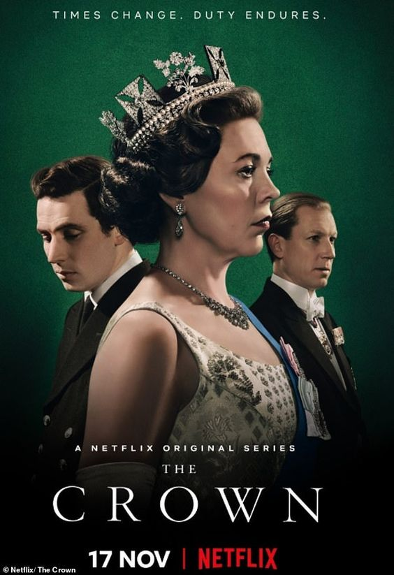

The Crown

Summary
The Crown is a historical drama television series created by Peter Morgan. It traces the reign of Queen Elizabeth II and the events that shaped the second half of the 20th century.
Cast
- Olivia Colman as Queen Elizabeth II
- Claire Foy as Young Queen Elizabeth II (Seasons 1-2)
- Josh O'Connor as Prince Charles
- Tobias Menzies as Prince Philip, Duke of Edinburgh
- Helena Bonham Carter as Princess Margaret
- Gillian Anderson as Margaret Thatcher
Storyline
The series explores the personal and political intrigues of Queen Elizabeth II's reign, as well as major historical events such as the Suez Crisis, the Apollo 11 moon landing, and more.
Episodes
- Season 1: 10 episodes
- Season 2: 10 episodes
- Season 3: 10 episodes